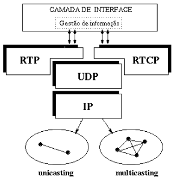
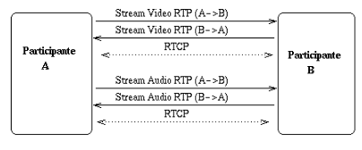

Protocolos de Transporte RTP/RTCP
Motivação RTP
- O TCP não está bem desenhado para aplicações interativas e com requisitos de tempo real;
- Comunicação ponto-a-ponto não é aplicável para multicast;
- Não há forma de associar o timing com segmentos;
- Causa delays arbitrários.
- O SCTP é multistream mas tem algumas desvantagens do TCP;
- Não inclui informações de timing sem qualquer tipo de suporte para aplicações com requisitos de tempo real. O DCCP providencia algum suporte para o controlo de buffers, mas não para o timing de mídias;
- O RTP tenta fornecer suporte ao transporte de dados, áudio ou vídeo em tempo real.
RTP
- Objetivo: Providencia mecanismos para entregas de dados (áudio, vídeo) em tempo real fim-a-fim.
- Aplicações típicas: vídeo-conferências, telefonia IP, etc...
- Suporta sessões unicast e multicast;
- Usa canais de dados (RTP) e um controlo de canal (RTCP);
- RTCP (Real Time Control Protocol) reporta o estado do canal de dados;

- Sessão RTP: \( canal\ de\ dados + canal\ de\ controlo \);
- Endereço de Sessão: endereço de rede (unicast, multicast), par de portas;
- Canal RTCP: \( Porta\ RTP + 1 \);
- Na presença de múltiplas streams mídia, cada uma transmitida numa sessão separada ou misturadas numa sessão singular em cada direção, dependendo nos codecs.

- Problemas RTP:
- Não faz reservas, não apresenta garantias de QoS;
- Não garante a entrega de packets.
- Não providencia nenhum mecanismo que garanta a entrega atempada de packets;
- Os routers devem providenciar serviços de entrega diferentes, mas não há garantias que os packets RTP cheguem ao destino de forma atempada.
- O encapsulamento RTP só é visto em end-systems e não por routers intermédios;
- Permite a reconstrução temporal, a deteção de perdas e identificação de conteúdos.
A parte do RTCP está toda abordada em Multimedia Networking II.